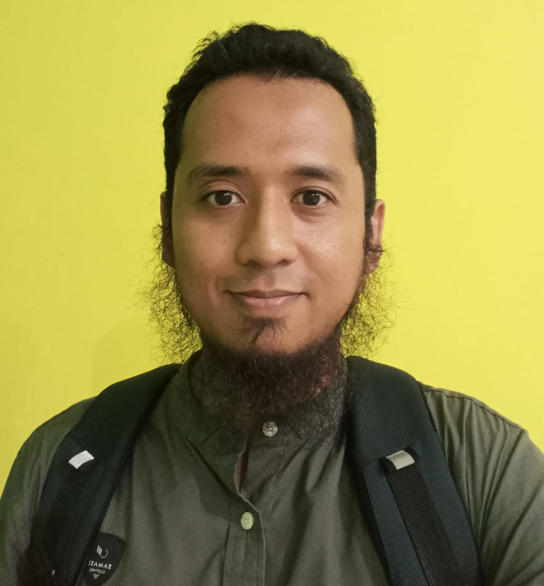

Situs Personal Ainan Ilmanda S.
cv | portofolio | publikasi | sertifikat |
Untuk kontak secara personal, silakan menghubungi melalui alamat surel berikut ainandoo@gmail.com atau melalui Telegram di t.me/ainandoo.
Berikut tautan media sosial Ainan Ilmanda S. :
Bidang Keahlian: Web & Mobile Development | Version Control (git) | IT Project Management | SEO Content Writing | Internet of Things | GNU/Linux
Publikasi
- Ilmanda, Ainan, (2018) BEKRAF Developer Day (BDD) 2018 Surabaya with Ainan, Podcast Developer Muslim, Devmuslim.id. Tautan 1. Tautan 2.
- Syafa'at, Ainan Ilmanda, (2016) Rekomendasi Layanan Portal F/OSS Di Lingkungan Internal ITS Surabaya (Studi Kasus Mirror Open Source Dan Portal GPL), Undergraduate thesis, Institut Teknologi Sepuluh Nopember. Tautan.
- Ilmanda, Ainan S., (2013) KOMUTER: Komunitas Peduli dan Pecinta Kereta Api, Citizen6, Liputan6.com. Tautan.